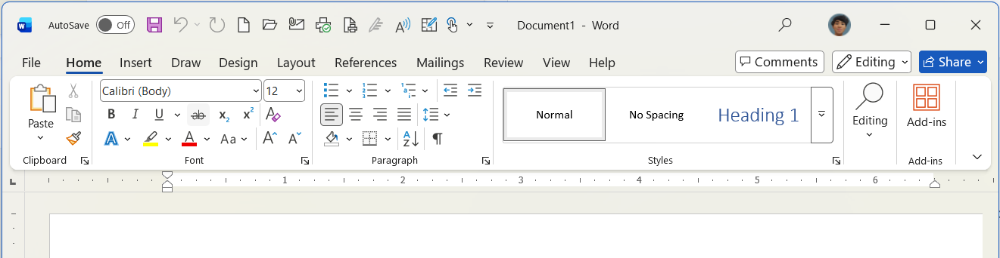
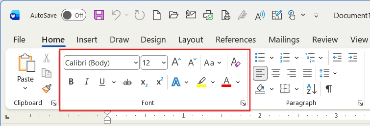
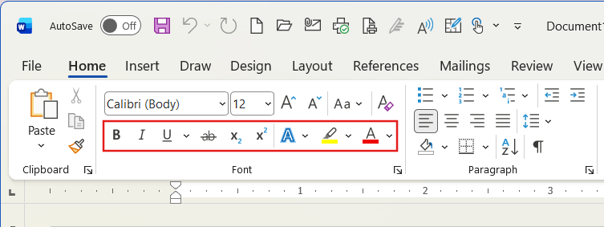
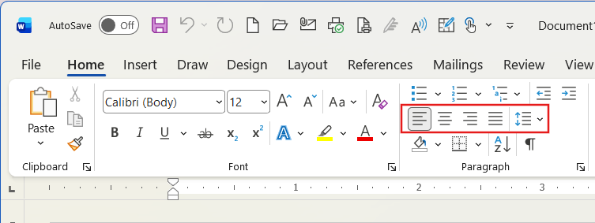
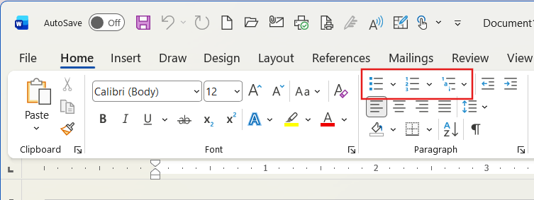

Setelah kertas disiapkan, langkah selanjutnya adalah mengetik. Untuk membuat tulisan Anda terlihat menarik, mudah dibaca, dan rapi, Anda akan sangat sering berinteraksi dengan grup Font (Tipografi) dan Paragraph (Paragraf) yang terletak di Tab Home.

Gambar 1: Grup alat Font dan Paragraph yang menjadi senjata utama mengedit teks.
Pemilihan jenis huruf sangat memengaruhi kesan dokumen Anda (formal, santai, atau kreatif), sedangkan ukuran huruf memastikan teks dapat terbaca dengan baik.

Gunakan alat ini untuk menonjolkan bagian teks tertentu agar langsung menarik perhatian pembaca.
Ctrl + B untuk Bold, Ctrl + I untuk Italic, atau Ctrl + U untuk Underline.

Fitur ini memastikan susunan paragraf Anda terlihat rapi sesuai dengan jenis dokumen yang dibuat. Terdapat 4 jenis perataan:
CONTOH RATA TENGAH (JUDUL)
(Contoh Justify) Ini adalah sebuah paragraf teks yang dibuat rata kiri dan kanan. Jika Anda perhatikan, setiap baris akan secara otomatis menyesuaikan spasinya sehingga huruf pertama menempel lurus pada batas kiri margin, dan huruf terakhir menempel lurus tepat di batas kanan margin, menciptakan blok teks yang sangat rapi seperti bentuk balok.

Selain perataan, keterbacaan dokumen sangat bergantung pada seberapa padat jarak antar baris teks Anda.